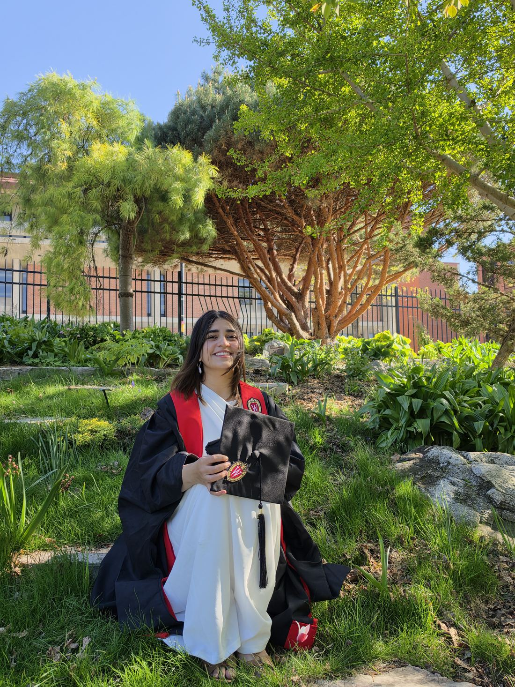

Hi! I’m Irhah, a multidisciplinary product designer with 4 years of professional design experience across brand, visual, and experience design. I enjoy working at the intersection of thoughtful problem-solving and visual storytelling, turning ideas into digital products and experiences people can connect with.
My background in communication design has shaped how I approach product design: I think about the bigger picture, from understanding people and identifying opportunities to shaping interactions, building visual systems, and bringing concepts to life through prototyping. I’ve led a team of 5 designers across 6 brands, worked with cross-functional teams, and explored hands-on development using tools like Unity and Claude Code.
I recently completed my Master’s in Design + Innovation at UW–Madison, where I’ve been exploring product design, emerging technology, and new ways to build meaningful experiences. I’m especially interested in AI‑enabled products, rapid prototyping, and the possibilities that emerge when design and technology come together.
Outside of design, you’ll probably find me playing games, watching anime and Studio Ghibli films, sipping tea, hanging out with cats, or getting lost in nature.
View Resume
Tap the photo to flip it
Experience
Independent
Freelance Brand DesignerDelivered end-to-end brand identities for independent clients, including MagicBox and Mr. Whiskerworth’s: visual systems, packaging, and digital experiences. Managed projects independently, from client discussions and creative direction to final deliverables.
AA Joyland Pvt. Ltd
Creative Lead (Experience Design & Brand)Led a team of 5 designers across 6 entertainment brands (Super Space, Peek A Bear, Bounce, Giggle Town, Kids HQ, and Flipped), setting design direction across digital, print, and physical environments. Served as primary brand designer for Flipped Park, owning its visual identity, brand guidelines, and signage system with the architect; the system was implemented across 3 UAE locations. Collaborated with 4 architects and 1 interior designer, alongside developers, project managers, and stakeholders, from prototyping and material testing through implementation.
Azcorp Entertainment Pvt. Ltd
Lead Designer & IllustratorDesigned and marketed the four-edition #GirlsCan illustrated comic series for UNICEF and Malala Fund. Created campaign content across social media, physical banners, music videos, and radio, and produced visual content for the national #BackToSchool campaign across broadcast, digital, and print. Prepared social media performance metrics for project reporting.
Internships: Creative Intern, VCast Online (2020) · Creative Intern, Ogilvy & Mather (2019)
Education
M.S. in Design + Innovation (Engineering)
University of Wisconsin–Madison · 2025 – Aug 2026 · GPA 4.0/4.0
Bachelor’s in Communication Design
Indus Valley School of Art & Architecture, Karachi · 2017 – 2020 · Graduated with Distinction in Thesis